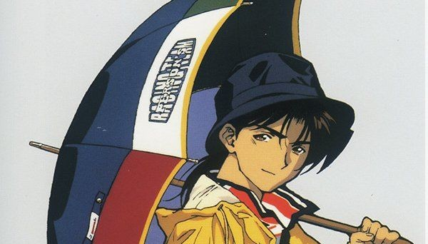

Genel Bilgiler
Tam Adı: Kintaro Oe
Seri: Golden Boy
İlk Görünüş: Golden Boy OVA (1995)
Cinsiyet: Erkek
Durumu: Hayatta
Fiziksel Özellikler
Yaşı: 25
Boyu: 175 cm civarı
Saç Rengi: Kahverengi
Göz Rengi: Kahverengi
Ayırt Edici Özellikleri:
Bisikletiyle sürekli yollarda olması, enerjik ve saf görünümü.
Kimlik Bilgileri
Doğum Yeri: Japonya
Bağlı Olduğu Grup: Bağımsız gezgin
Mesleği: Öğrenci (eski hukuk), geçici işlerde çalışan
Araç: Bisiklet
İlişkiler
Tanıştığı İnsanlar: Her bölümde farklı kişiler (işverenler, arkadaşlar, aşk ilişkileri)
Yakın Bağı: Bisikleti ve öğrenme arzusu

Kintaro Oe
Kişilik Özellikleri
Meraklı, öğrenmeye açık, saf ama zeki, enerjik, komik, özgürlüğüne düşkün, insanlarla kolay bağ kurabilen. Kintaro’nun en büyük gücü, her deneyimden ders çıkarabilmesidir.
Hedefleri
En Büyük Amacı: Hayatı keşfetmek ve her işten bir şey öğrenmek.
Yaşam Amacı: Özgürce yaşamak, insanlarla bağ kurmak ve kendini geliştirmek.
Hobileri
Sevdiği Şeyler: Bisiklet sürmek, yeni işler denemek, insanlarla sohbet etmek.
Sevmediği Şeyler: Tekdüze yaşam, öğrenmeye kapalı insanlar.
Hobileri: Seyahat etmek, yeni beceriler öğrenmek.